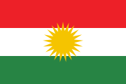

Global temperature · 1850 onward
HadCRUT5 anomalies relative to 1961–1990, with confidence limits. Worldwide temperature change; select Local history below for Kurdistan city records.

Green Kurdistan ژینگەی کوردستانSources, coverage and uncertainty
Inspect global temperature change from 1900 onward, local historical weather and recent air-quality records. No values are invented for missing periods.
HadCRUT5 anomalies relative to 1961–1990, with confidence limits. Worldwide temperature change; select Local history below for Kurdistan city records.
ERA5 reanalysis for selected cities. Model-assisted historical estimates, not exact readings at your location. About five days behind the present.
CAMS global model archive. No 1900-era air-quality values are available through this source. Hourly API values originate from a coarser model.
Choose Global history for worldwide temperature change, or Local history for Erbil, Sulaymaniyah, Duhok, Halabja and Shaqlawa.
Chart lines stop at missing values. Numbers in the table and CSV retain the precision supplied by the source. A short-term series is not a long-term climate trend.